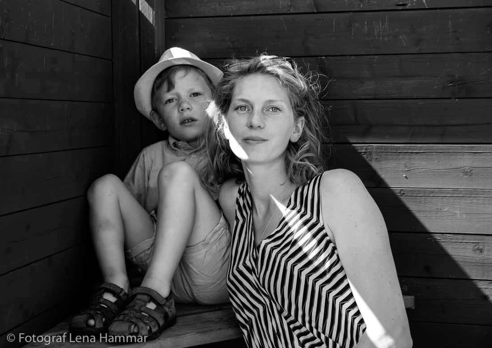

Ellen & Omar
Ellen & Omar Saga & Viktor
Saga & Viktor Nora & Liam
Nora & Liam Alva & Sami
Alva & Sami Hedda & Jonas
Hedda & Jonas Tove & Ali
Tove & Ali Maja & Erik
Maja & ErikBröllop i Stockholm. Stadshuset kl 11, tunnelbana kl 12, dansgolv till 03. Jag är med hela vägen.
Jag heter Nils och har fotat 180+ bröllop i stan sedan 2015. Ingen posering i en kvart vid en fontän – jag följer er genom kvarteren och tar bilderna medan det händer.
 BröllopFrån 24 500 kr
BröllopFrån 24 500 kr
FamiljLekpark, inte studio PorträttPar & förlovning
PorträttPar & förlovning FöretagFest & event
FöretagFest & event


Uppvuxen i Hägersten, numera på Södermalm med en sambo, en cykel och för många objektiv. Jag började fota konserter på Debaser och fastnade för samma sak på bröllop: ljuset, svetten, ögonblicket när farmor tar över dansgolvet.
Jag pratar mycket på förmötet och nästan inget under dagen. Det är så det ska vara.
– Nils9 800 kr
2 timmar. Stadshuset eller kyrkan, parporträtt på stan efteråt. 150+ bilder.
24 500 kr
10 timmar från förberedelser till första dansen. 600+ bilder, webbgalleri, förmöte.
32 000 kr
Obegränsat. Andra fotograf ingår. Fotobok 30×30 i linne.
"Nils fick med när min pappa grät i tunnelbanan. Vi visste inte ens att han tog bilden."Ellen & Omar, Stadshuset 2025
"Vi hatar att bli fotade. Han löste det med två skämt och en promenad över Västerbron."Saga & Viktor, Skeppsholmen 2025
Lördagar maj–september går oftast 12–14 månader innan. Vardagar och vinter finns ofta kvar.
En smygtitt inom 48 timmar, hela galleriet inom fyra veckor.
Ja, resor inom Mälardalen ingår. Längre bort tar jag tåget och skickar kvittot.

Skicka datum och plats. Jag svarar samma dag, oftast inom en timme.
hej@nilsberg.se